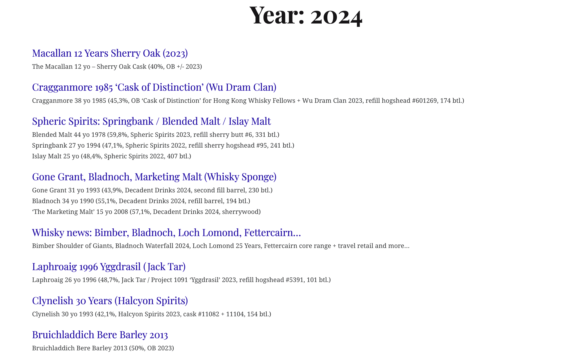

Code
import requests
import os
from bs4 import BeautifulSoup
import pandas as pd
import timewith whiskynote.be data
Tony Duan
Web scraping on www.whiskynotes.be

---
title: "One year page review"
subtitle: "with whiskynote.be data"
author: "Tony Duan"
execute:
warning: false
error: false
eval: false
format:
html:
toc: true
toc-location: right
code-fold: show
code-tools: true
number-sections: true
code-block-bg: true
code-block-border-left: "#31BAE9"
---
```{python}
import requests
import os
from bs4 import BeautifulSoup
import pandas as pd
import time
```
```{python}
os.system('pip show beautifulsoup4')
```
Web scraping on www.whiskynotes.be
# year page
```{python}
year_ur='https://www.whiskynotes.be/2023'
```

# read in html
```{python}
# Send an HTTP GET request to the website
headers = {'User-Agent': 'My User Agent'}
response = requests.get(year_ur,headers=headers)
```
```{python}
# success code - 200
print(response)
```
```{python}
#print(response.content)
```
```{python}
# Parse the HTML code using BeautifulSoup
soup = BeautifulSoup(response.content, 'html.parser')
```
# review bottle name on one year
```{python}
bottle001=soup.find_all('p')
```
```{python}
for i in bottle001[1:5]:
i.get_text()
```
# review topic name on one year
```{python}
topic001=soup.select('.archive-link')
```
```{python}
for i in topic001[1:5]:
i.get_text()
```
```{python}
topic_link=soup.select('.entry-permalink')
for link in topic_link[1:5]:
link.get('href')
```
# reference: